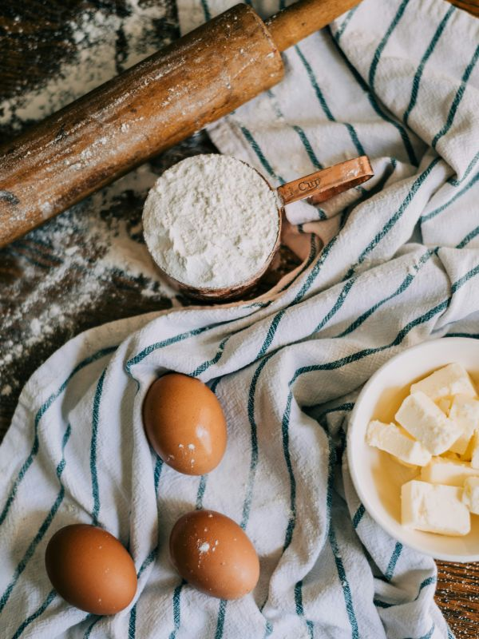

En svensk fikatradition
Att bjuda på sju sorters kakor är en klassisk svensk fikatradition. Traditionen syftar på det antal kaksorter som enligt äldre kafferepsetikett skulle finnas på kakfatet.
Småkakor kan vara spröda, mjuka, chokladiga, kryddiga eller fruktiga. De passar till kafferep, högtider, kalas och vardagsfika.
Här hittar du sju kakor med bilder, beskrivningar och recept.

En svensk fikatradition med sju sorters småkakor.